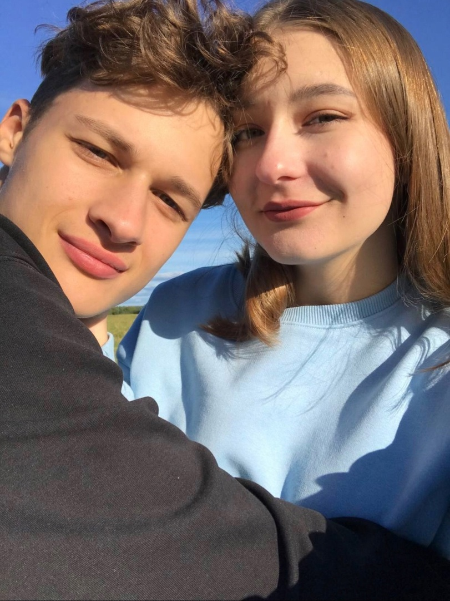
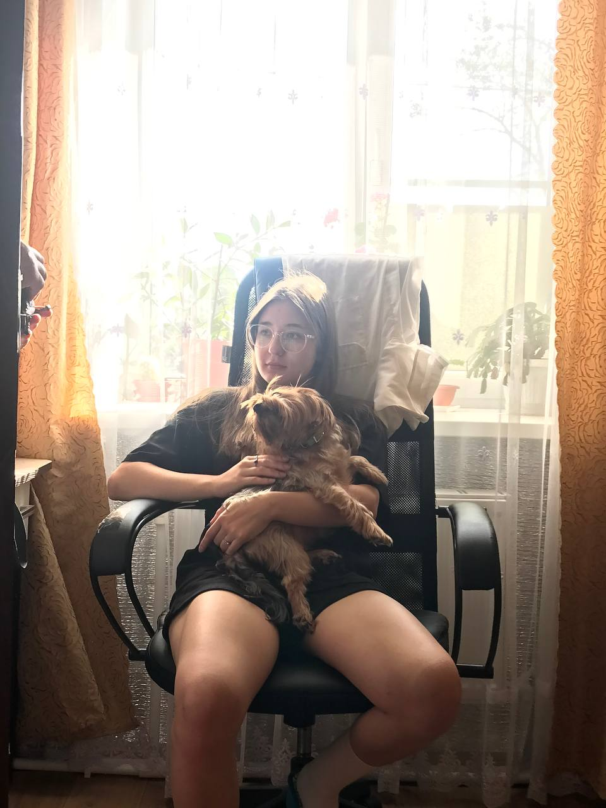
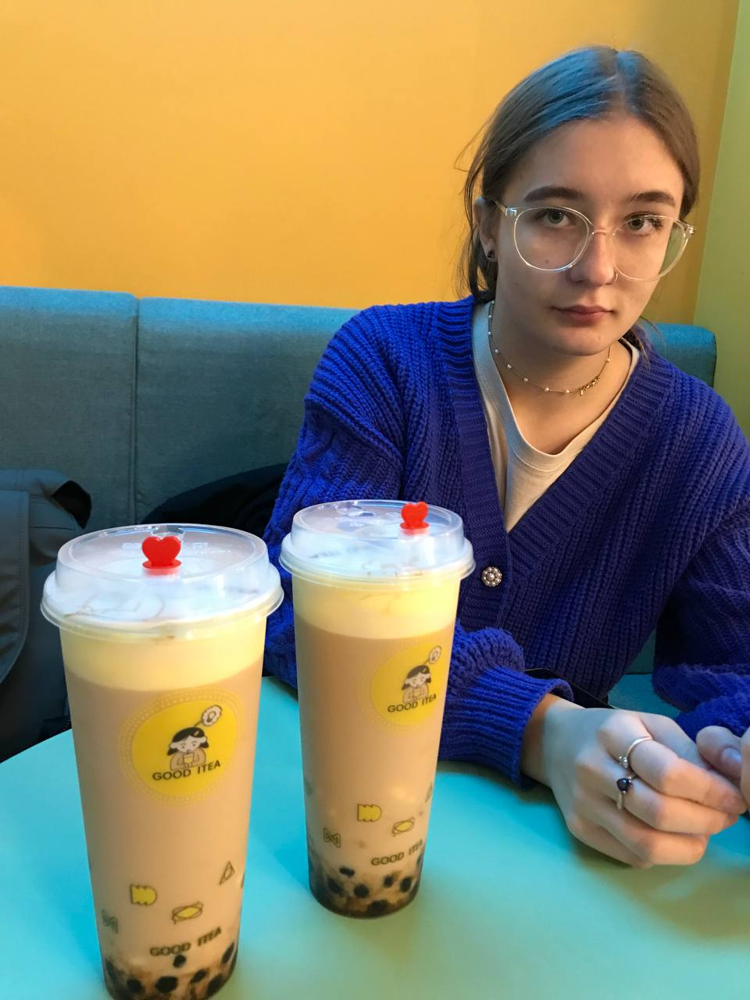
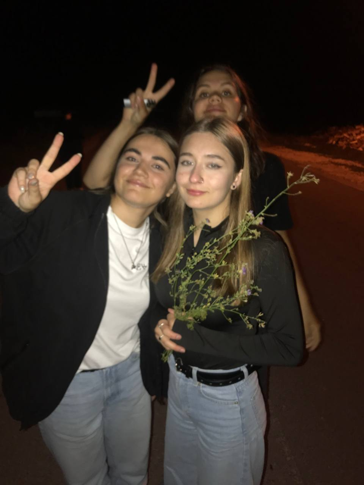

Хочу днями глядеть на капризное солнце
На небесную синь, облаков кудрявый парад
Языково

Один миллион следов, что оставил на этой тропе
Хоть я влюблён один на миллион, что мы будем вдвоём
Ликино

Смешай моей даме ваш самый жестокий коктейль
Я буду просто смотреть
Ждать, ждать, ждать
Питер

Отпусти своё горе на Красную планету.
Окстись! Неужели у тебя других планов нету?
Как букет целебных трав, ма
Твою травму исцелю плавно
Ликино